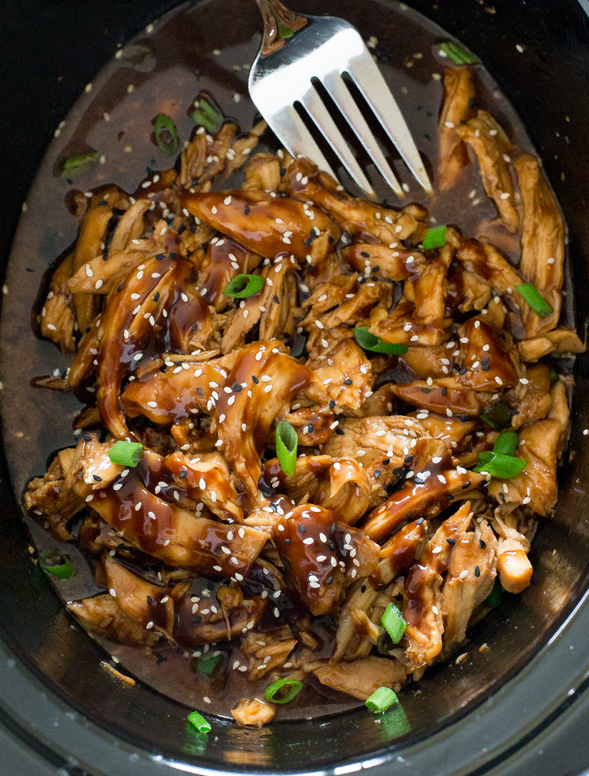

Go Back
Slowcooker Honey Garlic Chicken

The easiest slowcooker chicken recipe for meal prep or korean tacos
Ingredients
- 1.5 pounds of chicken thighs
- 1/3 cup of Soy Sauce
- 1/3 cup of honey
- 2 tablespoons of tomato paste
- 2 Teaspoons of Sriracha
- 4 cloves of garlic
- 1 Tablespoon of Rice Vinegar
- 2 Tablespoons of corn starch
Creation
- Place the chicken in your slowcooker
- Whisk together all other ingredients besides the corn starch and pour over the chicken
- Cook on Low for 4-5 hours or until soft
- Shred and remove chicken from slow cooker and add the corn starch and continue cooking on low until sauce thickens.
- Enjoy